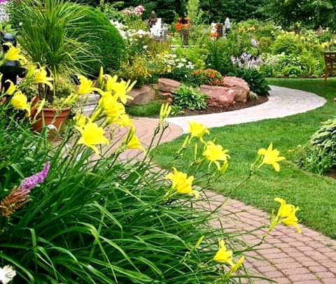

Blog, 22nd, 2020
The words nature and natural are used for all the things that are normally not made by humans. From another point of view, humans and nature can be said to be in conflict. Nature is often seen by humans as natural resources. Humans are the most dangerous of destroying the nature.
A flower is the part of a plant that is often brightly coloured and has a pleasant smell. In all plants, a flower is usually its most colourful part. We say the plant 'flowers', 'is flowering' or 'is in flower' when this colourful part begins to grow bigger and open out
The principal purpose of a flower is the reproduction of the individual and the species. See function of flower wikipedia
There are about 4 million species of flowers in the world and they are found in Different regions of the world. There are different varieties which are suitable according to the environment. Everything you want to know about Types of Flowers, Flower Pictures, colour,... Type of flowers
Example:
Flowers' importance in nature is everywhere—they can feed insects, birds, animals and humans; provide natural medicines for humans and some animals; and aid in a plant’s reproduction by enticing outside pollinators. Without flowers, plants would merely be green, and the world would be a duller place. Nowadays, some people are getting creative with making someflower into a product, like ROSE, it is used for making beauty products.
ROSE
flowers have long been admired and used by humans to bring beauty to their environment, and also as objects of romance, ritual, religion, medicine and as a source of food We can use flower as a decoration. It gives more impression whe we look over the beauty of its nature. We can plant more flower in our garden so that our house would be more attracted place. It is also good idea to put flower in our house , take branches of flowers and put inside of a vase or hang it in a place that you would like to see it. 